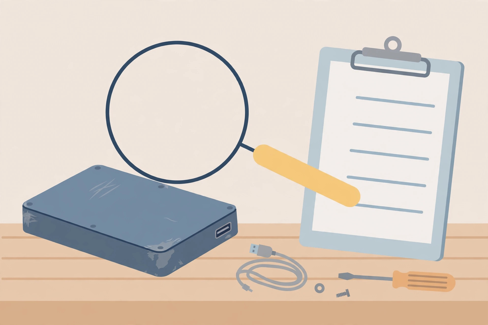

How to Test a Used Hard Drive or SSD Before You Trust It With Your Files

Data-loss warning first: until a used drive has passed every stage below, treat it as a stranger. Do not move your only copy of anything onto it, do not store the seller's old files anywhere you care about, and run no test that erases or writes across the whole drive. A second-hand drive is cheap precisely because its history is unknown — the point of this procedure is to replace that unknown history with evidence, in an order that protects you if the drive fails halfway through: inspect, identify, read its self-report, run its own built-in tests, and only then check the file system and start a probation period.
Most drive-health guides assume a drive already in service, quietly degrading in your own machine. A purchase is a different problem. The question is not "is my drive okay?" but "should this drive be accepted at all, and for what jobs?" That is why the procedure below ends in verdicts — trust, probation, or return it — rather than a single green tick. It uses free tools throughout: a SMART reader such as CrystalDiskInfo on Windows, the smartmontools smartctl command where a graphical reader is unavailable, the drive maker's own diagnostics, and, in its proper place at the end, Microsoft's CHKDSK.
Stage 1: inspect and identify the drive
- Before connecting anything, look the drive over: a cracked casing, a bent connector, or a rattling loose part inside a spinning drive is a return conversation, not a testing project.
- Connect it as directly as the computer allows — an internal SATA connection or the maker's recommended hookup in preference to a random USB dock — because some enclosures and docks block diagnostic access entirely (Western Digital's support notes list a third-party enclosure or docking station blocking access among the common causes of a drive not being detected at all).
- Confirm the computer sees the drive the seller described: model, capacity, and interface, in the SMART reader or the maker's tool. A drive that identifies as a different model or a much smaller capacity than advertised fails at this stage, before any health test runs.
- Write down the model and serial number now. They are what a warranty check, a support call, or a return will ask for, and they are easiest to copy while the drive is still on the desk.
Stage 2: read the SMART record before testing anything
SMART is the drive's own logbook, and on a used drive it is the closest thing to a service history. Read it before running a single test, because the numbers describe the life the drive has already lived.
- On Windows, open CrystalDiskInfo and select the used drive. Read the overall health status first — Good (blue), Caution (yellow), Bad (red), or Unknown (gray) in the maker's colour scheme (Crystal Dew World manual) — then the individual counters below it.
- For a hard drive, look at the three counters the maker uses for its Caution judgement: 05 Reallocated Sectors Count, C5 Current Pending Sector Count, and C6 Uncorrectable Sector Count. CrystalDiskInfo shows Caution when one of these raw values exceeds its configured threshold (CrystalMark).
- Note the power-on hours and the temperature alongside them, and record every number with today's date. On a used drive the trend cannot help you yet — there is no earlier reading — so today's record becomes the baseline every later check is compared against.
- For an SSD, read the remaining-life or percentage-used figure instead of sector counts. CrystalMark notes that many SSDs show Caution when remaining life reaches 10 percent or less, and that the percentage is an endurance estimate — it cannot be converted into a number of remaining days or months.
- On a Mac or Linux machine, or where no graphical reader is available, the equivalent reading is
sudo smartctl -a /dev/sdain a terminal, replacing the device path with the used drive's actual device. The smartctl manual describes-aas printing a large amount of SMART information,-Has the overall-health self-assessment, and-l selftestand-l erroras the test and error logs.
Two readings end the evaluation immediately. A Bad status — which can appear when a value the drive reports falls below the manufacturer's own threshold — means the drive should not become storage for anything that matters (CrystalMark). And any of the 05, C5, or C6 counters that is already large, rather than barely nonzero, describes media that has been deteriorating for a while. Small nonzero values are a probation discussion; a drive that arrives with a long damage history is a return.
Stage 3: the short self-test, then the long one
A SMART reading is a report; a self-test is the drive examining itself on request. Run both sizes, short first, because a drive that cannot pass the short test has saved you the hours the long one takes.
- Start the short self-test: in the maker's tool, the Short Test — Western Digital describes its Kitfox Short Test as a quick drive health test — or at a terminal,
sudo smartctl -t short /dev/sdawith the drive's real device path. The smartctl manual puts the short test at usually under ten minutes; it checks electrical and mechanical performance as well as read performance, and records the result in the self-test log. - Read the outcome before continuing: the log line via
smartctl -l selftest, or a PASS or FAIL message in a maker tool — WD states that a completed Kitfox test shows exactly that, PASS or FAIL. - If the short test passes, run the long (extended) self-test:
sudo smartctl -t long /dev/sda, or the maker tool's Extended Test — WD describes it as the thorough test, taking ten minutes or more. The smartctl manual calls the long test the longer, more thorough version of the short one, running from tens of minutes to several hours on large drives, and notes it can run during normal system operation. - If a test needs stopping,
smartctl -Xaborts it — but an aborted long test is an unfinished verdict, not a pass. Re-run it to completion before the drive earns trust. - For a spinning drive that was shipped to you, add the conveyance test where the tool offers it (
smartctl -t conveyance): the manual describes it as a minutes-long routine intended to identify damage incurred during transporting of the device — precisely the risk a mailed used drive carries.
Stage 4: the file-system check, in its proper place
Only now — hardware read, self-tests passed — does the file system enter the picture, and it helps to be clear about what this check is. Microsoft's documentation describes CHKDSK as checking the file system and its metadata for logical and physical errors; run with no parameters it reports status and fixes nothing. It is a check of how the drive is organised, run last because a clean file system on failing hardware proves nothing about the hardware.
- Open Command Prompt as administrator — Microsoft notes that membership in the local Administrators group, or equivalent, is the minimum required to run CHKDSK.
- Run a read-only pass first:
chkdsk X:, replacing X with the used drive's letter. Read the status report; no changes are made. - If errors are reported and the drive holds nothing you need, repair with
chkdsk X: /f. Microsoft documents/fas fixing errors on the disk, with the disk locked while it works. - Reserve
chkdsk X: /rfor a drive you are deliberately probing for bad sectors:/rlocates bad sectors and attempts to recover readable information, includes the/fbehaviour, and on a large hard drive reads every sector, which can take a considerable amount of time (Microsoft). On a used drive with no data of yours on it, that time is well spent; on a drive already carrying your only copy, it would be exactly the wrong order of operations. - Do not interrupt a running CHKDSK — Microsoft recommends against it — and record the final report alongside the SMART baseline from Stage 2.
The two blind spots that fool buyers
The invisible drive. Some USB bridge chips and external enclosures do not support the commands needed to retrieve SMART information at all, so a drive that does not appear in a SMART reader — or shows Unknown — has not been declared healthy; it has not been examined (CrystalMark). The fix is a more direct connection, not a shrug: test the drive where its logbook can actually be read.
The cable that looks like a dying drive. The C7 Interface CRC Error Count usually records communication errors between the drive and the computer, with causes that include a defective SATA cable, a loose connector, or a power problem (CrystalMark). A used drive tested through a tired cable can collect exactly the errors that make it look like a bad purchase. Swap the cable and re-test before condemning the drive — and note that the C7 counter is cumulative, so judge the re-test by whether the count stops rising, not by whether it returns to zero.
Verdicts: trust, probation, or return it
| Evidence | Verdict | Terms |
|---|---|---|
| Identifies correctly; SMART Good; 05, C5, C6 all zero; short and long self-tests pass; file-system check clean | Trust — with backups | Normal service, under the standing rule that no single drive is a backup strategy. CrystalMark's own guidance holds even for a Good drive: important data belongs in more than one location |
| SMART Caution from a small nonzero 05, C5, or C6; self-tests pass; or an SSD with low-but-present remaining life | Probation | Working storage for copies, scratch space, or a backup target — never the only copy. Re-read the counters on a schedule; CrystalMark recommends replacement strongly when those values keep increasing |
| SMART Bad; a failed short or long self-test; a maker-tool FAIL; large or fast-rising sector counters; wrong model or capacity at Stage 1 | Return it | Do not negotiate with the evidence by re-testing until it passes. A drive showing Caution or Bad should not remain the only home for important data (CrystalMark) — a drive that arrives that way should not become a home for it at all |
| No SMART data obtainable through any connection available to you | Untested — treat as probation at best | An unexamined drive gets no trust by default. Either find a connection that can read it, or price the risk honestly and keep irreplaceable data off it |
The probation row is where used drives earn their keep. A cheap drive with a small, stable reallocated count can serve for years as a second or third copy — the duty where a failure costs an afternoon of re-copying rather than the data itself. What it must never do is graduate silently: the dated Stage 2 record exists so that a counter which has doubled since purchase is noticed at a routine re-check, not discovered during an emergency.
FAQ
The seller says the drive was "fully tested." Tested how? Ask which tests, and run your own anyway. A format and a quick copy are not a self-test, and the drive's own logs — readable with smartctl -l selftest and -l error — show a history no sales description can edit away.
Is a quick format before use a good idea? Formatting organises a file system; it does not examine hardware, and on a newly bought drive it destroys the one thing you want first — evidence of how the drive was behaving. Test first, format after the verdict, and only on a drive that holds nothing you need.
How long does the whole acceptance test take? The reading stages take minutes. The long pole is the long self-test: from ten minutes or more in a maker tool to several hours for a large spinning drive under smartctl. Run it overnight if needed — deciding inside the return window, with the long test complete, is the entire point of testing on arrival.
What success looks like: a written, dated baseline (model, serial, power-on hours, the 05/C5/C6 counters or the SSD life figure), a short and a long self-test both completed and passed, a file-system check run after — not instead of — the hardware tests, and a verdict from the table applied before the drive stores anything that matters.
Related: free tools to check drive health and SMART basics, explained simply.